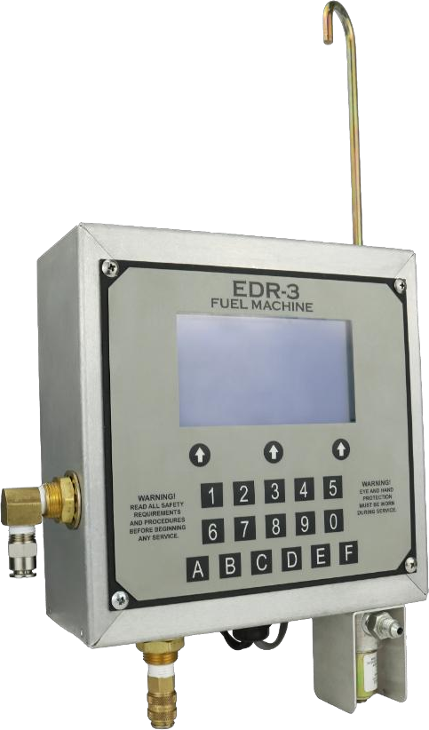

Doc no. MOC-TSB-26-05 // Vol. 26 No. 05 // Oct 19, 2026 // Fuel
EDR Advanced Module
New73510
The new EDR Advanced Module works with the automated pedal depressor, 73545.
What's new
It has the same advanced functions and performance as the full EDR Advanced Machine in a more compact, portable package. With the MOC CAT Tool as its fluid reservoir, technicians can perform advanced EDR procedures with more flexibility in the field.
Upgrade: Customers using the 73410 Module can upgrade to the new 73510 Advanced Module with the upgrade kit, 73559.
Key benefits
- Compact and portable
- Works with the automated pedal depressor, 73545
- Same advanced features as the EDR Advanced Machine
- Uses the MOC CAT Tool as its fluid tank, for a smaller equipment footprint
Contact
For more information, contact the Machine & Equipment Department at 866.244.6621.

Part numbers
| Part No. | Description | Notes |
|---|---|---|
| 73510 | EDR Advanced Module | |
| 73559 | Upgrade kit, 73410 Module to 73510 | |
| 73545 | Automated pedal depressor |